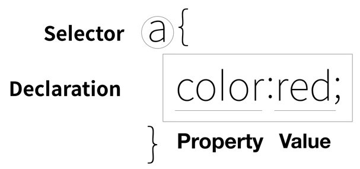

WEB2 - CSS
- 속성과 선택자
- 박스모델
- 그리드
- 반응형 디자인
- CSS코드의 재사용
CSS는 html과 완전히 다른 언어이다.
따라서 웹브라우저에게 그것이 CSS라는 사실을 알려줘야 한다.
→ style을 사용한다.
(1) 방법1: 꾸미고 싶은 해당 태그 안에 style 속성을 사용하기
- 해당 태그 안에 style="color: red"를 추가해준다.
ex) a href="02.html" style="color:red"
※여기서 style=""은 (CSS가 아니라) html의 속성(property)이다.
(2) 방법2: head 안의 style 태그 안에 담기

- 선택자(selector)로 꾸미고 싶은 태그 이름을 적는다.
→ 모든 해당 태그에 적용된다.
이 때 콤마를 사용해서 여러가지 태그에 적용시킬 수 있다.
ex) h1, a{}
- 대괄호({}) 안에 원하는 효과(declartion)를 적는다.
- 여기에서 color는 속성(property),
red는 속성값(property value)이다.
(3) (2)의 선택자의 종류
- ① tag 선택자
→ a {}
- ② class 선택자
해당 태그에 class를 지정해준 후
(a href="01.html" class="saw")
※ 여기서 class와 saw는 모두 (CSS가 아니라) html이다.
→ .saw {}
- ③ id 선택자
해당 태그에 id를 지정해준 후
(a href="03.html" id="active")
※ 특정 id값은 하나의 태그만 가질 수 있다.
→ #active {}
(4) (2)의 선택자의 중첩
- class는 여러개 가질 수 있고 띄어쓰기로 구분한다.
ex) a href="03.html" class="saw active"
- class와 id를 동시에 가질 수 있다.
ex) a href="03.html" class="saw" id="active"
(5) (2)의 선택자의 우선순위
- 밑에 있는 (태그 입장에서 더 가까운) 명령이 더 큰 영향력을 갖는다.
- tag < class < id 선택자 순으로 강하다.
(6) 속성(property)의 종류
- color:red; 글자 색
- font-size: 45px; 글자 크기
- text-align: center; 글자 정렬
- text-decoration: none; 밑줄 없애기